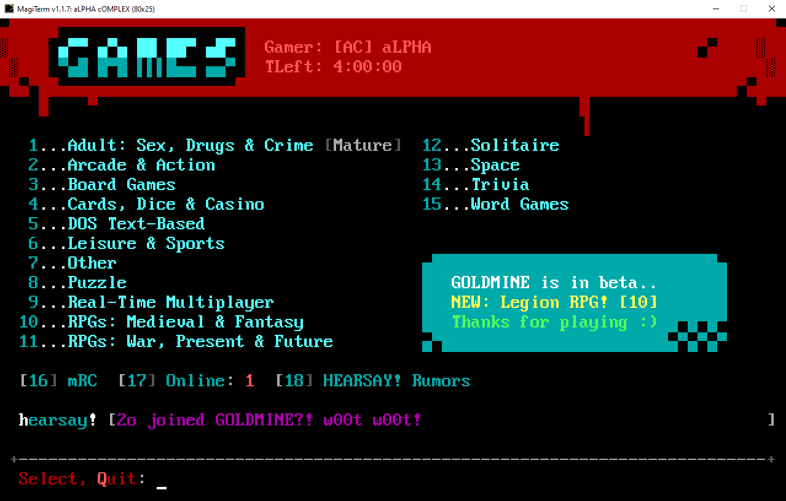
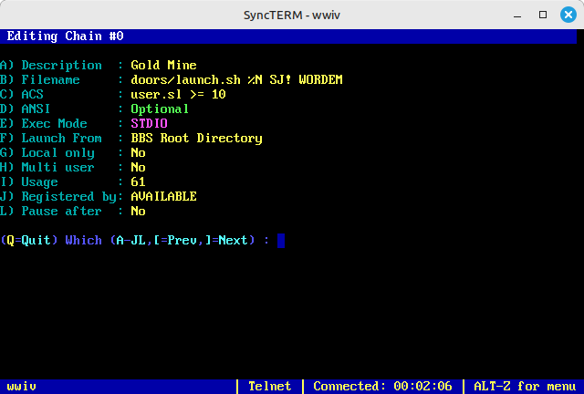

gOLD mINE (named after a coin-op arcade near where j0hnny a1pha grew up) is a terminal-based Community Door Server for BBS games. Open to all, easy to access with modern BBS software.
It's located on port 2513 at
goldminedoors.com.
Total Games: Loading...
gOLD mINE is not a BBS (despite the URL). There are no message boards or file download areas, and you can't "login" to it like a traditional BBS via Telnet or SSH. It does one thing, and one thing only: launch games remotely for users from other BBSs using RLOGIN.
If you run an old-school style, terminal-based BBS (probably using new-school BBS software like Mystic, Synchronet, Talisman, WWIV or ENiGMA½) you know that setting up door game programs can be time consuming and sometimes, a headache.
In their heyday of the 1980s and early 90s, these door games were designed to run under DOS (or later, Windows 32-bit) and they could be finicky. Hunting down registration keys or cracks can now be daunting (many doors are abandonware these days, with original authors having sadly passed). So, a Door Server takes work out of setup and lets you add LOTS of these games from a central service, almost immediately, running them over an RLOGIN connection that's practically seamless for your users. The other benefit is a potentially larger player base, aggregating them in a centralized manner with other BBSs.
gOLD mINE does not require you to apply for membership. Just follow the directions below using RLOGIN.
Ready to go? Setup an outbound RLOGIN connection from a menu item on
your BBS to goldminedoors.com port 2513,
using the
settings below. Heck, you could even connect directly using RLOGIN and
Syncterm!
'sudo apt install rsh-redone-client'
Every gOLD mINE BBS needs a tag that identifies it. You can make it up, just use these guidelines:
Create a script called "goldmine.lua" in your scripts/ directory:
local un = bbs_get_username()
bbs_clear_screen()
bbs_write_string("Loading gOLD mINE door arcade...")
bbs_rlogin_ip4("goldminedoors.com","2513","","[SJ!]"..un,"xtrn="WORDEM")
-- change "SJ!" to your BBS tag
-- "xtrn="WORDEM" is the door code for the game you want to launchThen create a Gold Mine entry in menus/doors.toml:
[[menuitem]]
command = "RUNSCRIPT"
hotkey = "1"
data = "goldmine"
Add gOLD mINE to your menu as
IR - Outbound RLOGIN Connection
/addr=goldminedoors.com /port=2513 /user=[TAG]@USER@ /pass=@USER@ /PROMPTTAG with your unique 1-3 character BBS
tag, e.g [ABC].
[TAG] and
@USER@
/PROMPT hides the connection string from the user
/pass=@USER@ with whatever you want for
the @USER@ part
?rlogin goldminedoors.com -s[TAG] -s %aMake sure to replace "TAG" with your own bbs tag.
Use Chain Edit to add a gOLD Mine entry. If you want to load the main menu so your users can select a game, and not directly launch a specific door with a door code, leave off the door code parameter ("WORDEM"):

We're passing the node number (%N), your BBS Tag (replace with your Tag), and optional direct launch door code. Replace "goldmine.sh" with the path to your script.
launch.sh
#!/bin/bash
# Get the node number and door code from the arguments passed to the script
# Make sure the path to WWIV's DOOR32.SYS file is correct!
NODE_NUMBER=$1
BBS=$2
DOOR_CODE=$3
URL="goldminedoors.com"
PORT="2513"
# Define the path to the WWIV DOOR32.SYS file
DOOR32_SYS_PATH=/wwiv/e/${NODE_NUMBER}/temp/door32.sys
# Extract the alias from line 7, replace spaces with underscores, and store it in a variable
USER_ALIAS=$(sed -n '7p' "$DOOR32_SYS_PATH" | tr ' ' '-')
PREFIX="["$BBS"]"
# Run the rsh-redone-client command with the extracted user alias and provided door code
if [ -n "$DOOR_CODE" ]; then
TERM_PARAM="xtrn=$DOOR_CODE"
TERM=$TERM_PARAM rlogin -p $PORT -l "$PREFIX$USER_ALIAS" $URL
else
rlogin -p $PORT -l "$PREFIX$USER_ALIAS" $URL
fiIf you want to launch a door game directly from your BBS, bypassing the gOLD mINE main menu, use a Door Code from the list on this page. If no door code is passed, the user will land at the gOLD mINE main menu.
Replace the doorcode with a code below ("/term=xtrn=WORDLE") that you want to launch directly:
/addr=goldminedoors.com /port=2513 /user=[XYZ]@USER@ /pass=@USER@ /term=xtrn=WORDLE /PROMPT| DOOR NAME | GENRE | CODE |
|---|---|---|
| Loading game library... | ||
| DOOR NAME | GENRE | CODE | LAUNCH COUNT |
|---|---|---|---|
| Loading top games... | |||
You can access some endpoints to retrieve JSON statistics for:
Data automatically reloads and refreshes JSON data every 24 hours.
Retrieve the top 10 most launched games.
200 OK: A JSON object containing the top 10 most launched games.
400 Bad Request: If the period parameter is missing or invalid.
{
"period": "all",
"games": [
{
"game_name": "Adventurer's Maze II",
"door_code": "AM2",
"category": "RPGs: Medieval & Fantasy",
"launch_count": 42
},
...
]
}Retrieve detailed statistics.
200 OK: A JSON object containing detailed statistics.
400 Bad Request: If the period parameter is missing or invalid.
{
"month": {
"january": [
{
"game_name": "Adventurer's Maze II",
"door_code": "AM2",
"category": "RPGs: Medieval & Fantasy",
"launch_count": 42
},
...
],
...
}
}Retrieve a list of all games with details.
200 OK: A JSON object containing the list of all games.
[
{
"game_name": "Adventurer's Maze II",
"door_code": "AM2",
"category": "RPGs: Medieval & Fantasy"
},
...
]
Contact j0hnny a1pha on
fsxNet or WWIVNet "gOLD mINE Game
Server" sub, or on
BBS World Discord
(alpha_64) for more details or to ask a question.